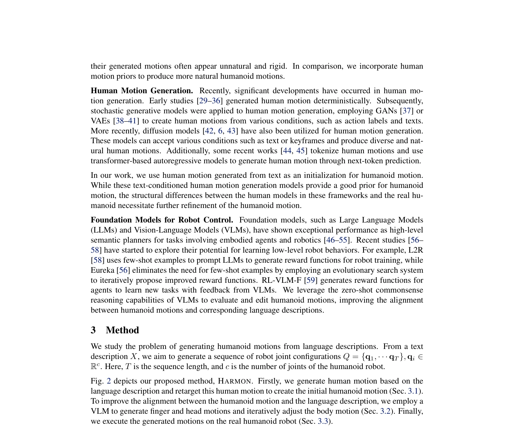
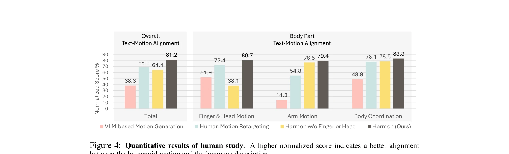

저자: Zhenyu Jiang, Yuqi Xie, Jinhan Li, Ye Yuan, Yifeng Zhu, Yuke Zhu | 날짜: 2024-10-16 | URL: https://arxiv.org/abs/2410.12773

Fig. 2 depicts our proposed method, HARMON. Firstly, we generate human motion based on the
인간 모션 데이터셋으로부터 사전학습된 프라이어를 활용하고 Vision Language Model을 통해 손가락과 머리 모션을 생성·편집하여 휴머노이드 로봇의 자연스러운 전신 모션을 언어 설명으로부터 생성한다.

Figure 4: Quantitative results of human study. A higher normalized score indicates a better alignment
Fig. 2 depicts our proposed method, HARMON. Firstly, we generate human motion based on the
총평: 이 논문은 인간 모션 프라이어와 VLM의 상식적 추론을 창의적으로 결합하여 언어로부터 자연스러운 휴머노이드 모션을 생성하는 실용적인 방법을 제시하며, 실제 로봇 실험과 높은 사용자 평가로 그 유효성을 입증했다.